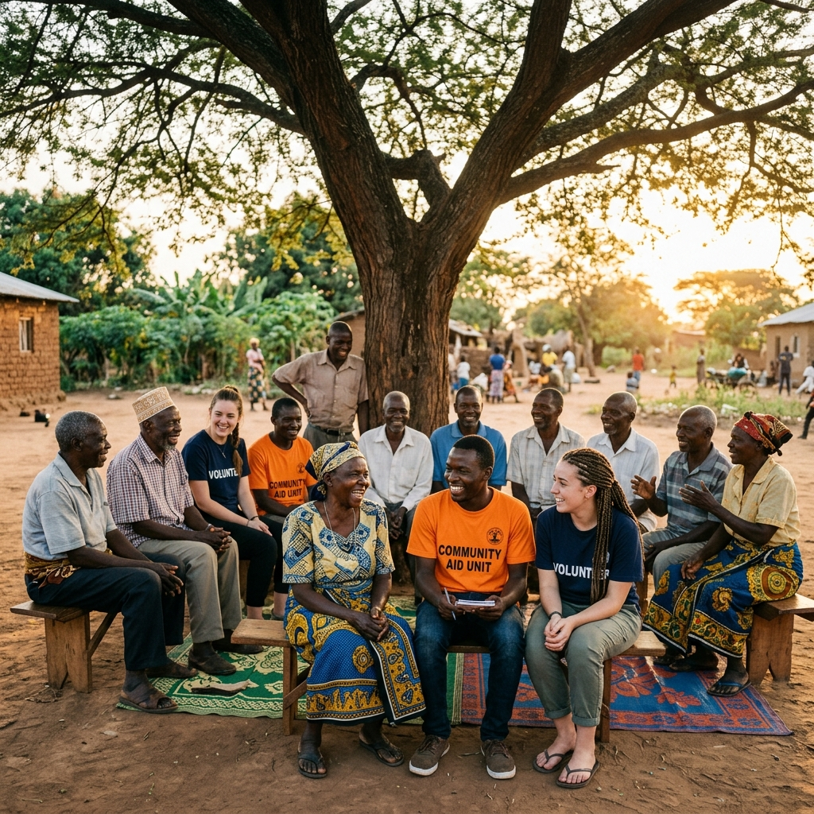
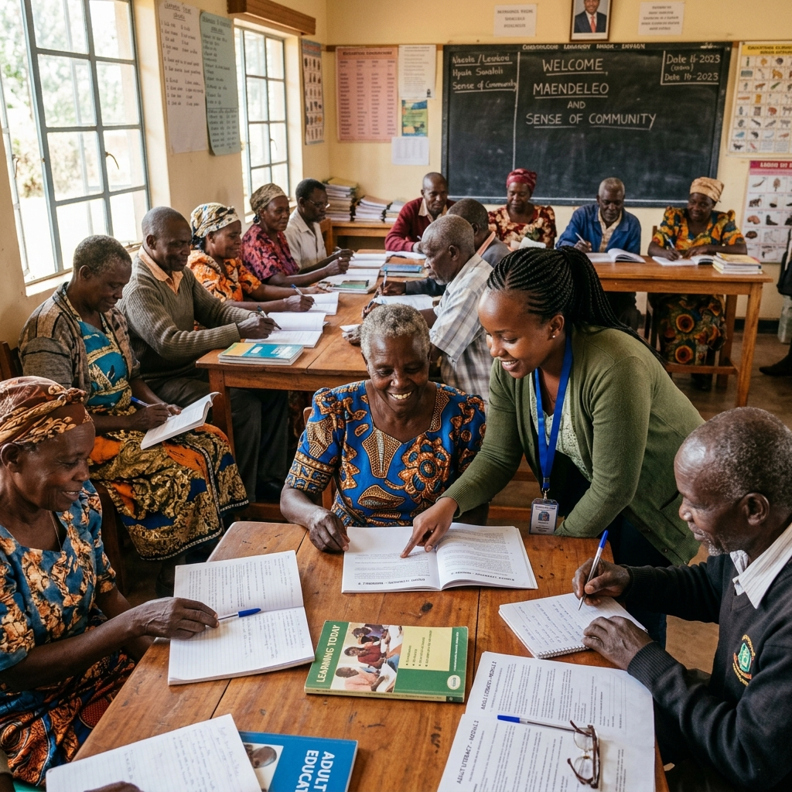

Radio12 Oct 2024
Thobela FM Morning Drive: Wisdom of the Elders
Our founder discusses the importance of intergenerational dialogue and the upcoming heritage festival in Bokwidi.
Listen NowStay up to date with BOAC in the news and community spotlight.

RadioOur founder discusses the importance of intergenerational dialogue and the upcoming heritage festival in Bokwidi.
Listen Now TV Appearance
TV Appearance
A special segment highlighting our successful 'Roots & Shoots' agricultural program pairing youth with seniors.
Watch Video
EventPhoto gallery from our wonderful Spring Festival, featuring traditional music, dance, and a feast prepared by the community.
View Gallery Press Release
Press Release
The Bokwidi Old Age Centre has been recognised by the Limpopo Department of Social Development for outstanding community service.
Read More Radio
Radio
A panel discussion on the challenges and opportunities in providing dignified care for elderly South Africans in rural areas.
Listen NowA special Heritage Day programme where community elders shared traditional stories, songs, and recipes with local youth.
View Gallery